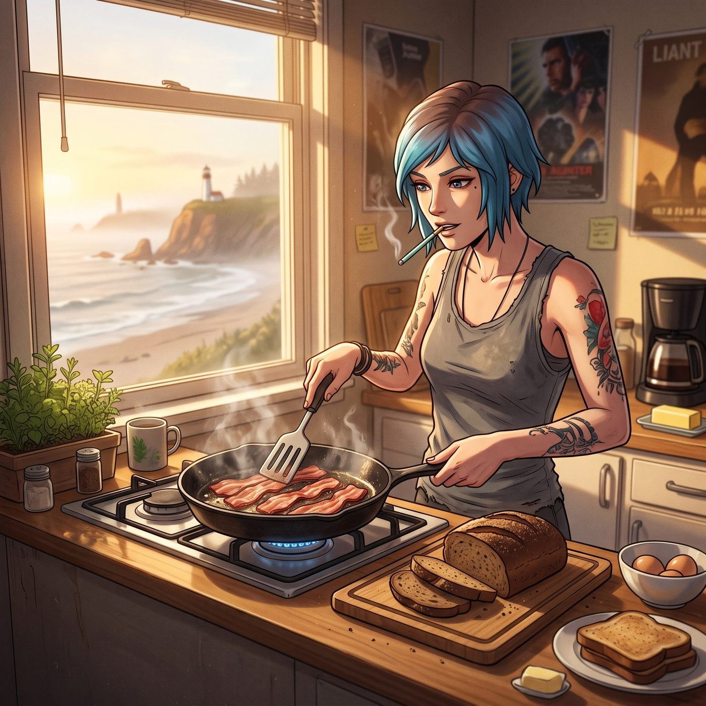

晨光廚房

晨光穿透俄勒岡海岸微薄的晨霧，化作大片明亮的暖金色光斑，溫柔地鋪滿了 302 寢室的開放式小廚房。
平底鍋裡，厚切培根在高溫下滋滋作響，濃郁的油脂香氣混雜著剛出爐黑麥吐司的微焦麥香，在空氣裡四處流淌。
Chloe 穿著一件寬大的灰色舊無袖背心，嘴裡叼著一根沒點燃的薄荷糖棒，手裡正拿著鍋鏟極其熟練地給培根翻面。她那一頭標誌性的藍髮在晨光下顯得格外蓬鬆，眼底雖然帶著熬夜看電影的淡淡青黑，整個人卻散發著滿電運轉的活力。
「聽著，Maxine，」Chloe 拿著木鏟指了指料理台上的六顆有機雞蛋，語氣宛如後廚大廚，「老娘的煎蛋技術傳承自廢品場最硬核的汽修早餐哲學——邊緣必須煎出焦脆的金黃裙邊，蛋黃得是完美流心的。給妳五秒鐘決定是要單面煎還是雙面。」
「單面，但請別把黑胡椒撒得像是在給引擎噴漆一樣。」坐在餐桌旁擦拭相機鏡頭的 Max 忍不住抬起頭笑了笑。她已經換上了平日裡常穿的鹿頭印花衛衣，鼻樑上架著眼鏡，桌邊整整齊齊碼著昨晚洗印出的幾張拍立得。
料理台另一側，Kate 正繫著一條淺藍色的碎花圍裙，動作輕柔而有條理地將切好的牛油果片、新鮮小番茄和草莓擺進白瓷盤中。她身旁的小鍋裡正慢火燉煮著燕麥粥，時不時飄出肉桂與楓糖的甜香。
「主保佑我們迎來了一個晴朗的好天氣。」Kate 轉過頭，溫柔地將一小罐自製的野藍莓果醬推到 Max 面前，「昨晚睡得好嗎，Max？今天的海風很平靜，天台上的草本植物應該都曬到了第一縷陽光。」
「睡得像一塊沉入太平洋的石頭。」Max 拿起一片烤得金黃酥脆的黑麥吐司，抹上一層厚厚的藍莓醬，滿足地咬了一小口，「而且完全沒有做任何怪夢。」
就在這時，臥室走廊傳來了極其輕微卻富有節奏的拖鞋聲。
Victoria 穿著一套剪裁極其精緻的香檳色真絲睡衣，外面披著同色系的長袍，手裡優雅地端著自己的骨瓷咖啡杯走了出來。雖然她的長髮已經梳理得一絲不苟，但眼尾微微下垂的弧度依舊暴露了名媛在清晨時分特有的低氣壓。
「一大早廚房的油脂分貝就超標了，Price。」Victoria 走到咖啡機旁，一邊等著濃縮黑咖啡滴落，一邊挑剔地掃視著平底鍋，「如果那份培根的飽和脂肪酸蹭到了我的吐司邊上，我就會讓妳把整個油煙機擦拭三遍。」
「早上好啊，尊貴的蔡斯小姐。」Chloe 咧嘴一笑，故意用鍋鏟在空中敲出一記響亮的金屬節奏，隨手鏟起兩片煎得焦香酥脆的培根精準落進 Victoria 面前的空盤裡，「特供無糖低碳水純蛋白質，專門用來拯救妳那張被早起摧毀的臭臉。」
Victoria 嫌棄地挑起眉毛，低頭看著盤子裡邊緣微焦、火候卻剛好無挑剔的培根，嘴唇動了動，最終只是端起熱氣騰騰的咖啡抿了一口，低聲說了句：「……火候勉強及格。」
餐桌很快被擺得滿滿噹噹——冒著熱氣的流心蛋、香脆培根、五彩繽紛的水果沙拉、濃稠的肉桂燕麥粥，以及四個盛著不同飲品的杯子。
四個人圍坐在長木桌旁，晨光在每個人的杯壁上折射出細碎的金芒。窗外，阿卡迪亞灣的小鎮在海鷗的清啼中緩緩甦醒，陽光將遠處燈塔的白塔身照得一片透亮。
沒有倒計時，沒有未知的恐懼，只有餐具輕碰的清脆聲響、熱咖啡升騰的白霧，以及即將展開的、完全屬於她們自己的平凡新一天。